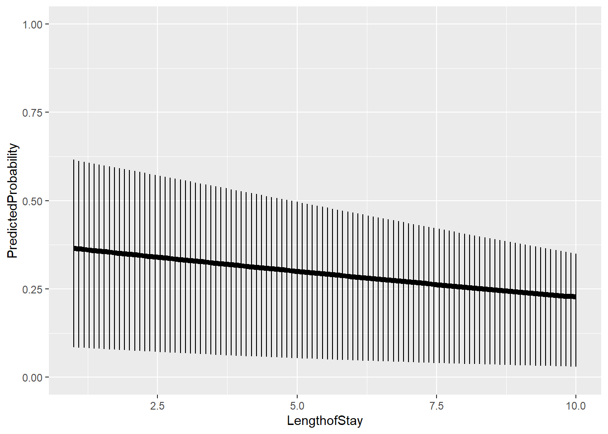

Attaching package: 'lattice'
The following object is masked from 'package:boot':
melanoma
2.1 Methodology overview
2.1.1 Model structure
Here, we briefly cover generalized linear mixed models (GLMMs). GLMMs should be used when you have clustered data, and a response variable that is not continuous. They can mainly be fit with the glmm package in R. package in R. You may need other packages for multinomial (mclogit) and cumulative logit (clmm) regression. In general, the GLMM is the child of LMMs and GLMs. Link functions and random effects join forces!
We may consider the linear predictor: \[\eta=X\alpha+Z\beta.\] The link function allows us to LINK the response \(Y\) to \(\eta\). We can then define:
\(\eta=X\alpha+Z\beta\)
\(g\) – the link function
\(g^{-1}\) – the inverse link function
We can the concisely write our model as: \(g(E(Y))=\eta\), \(E(Y)=g^{-1}(\eta)\) and \(Y=h(\eta)+\epsilon\).
For instance, popular link functions include: - logit: \(g(x)=logit(x)=\log(x/(1-x))\) – for binary response - log: \(g(x)=\log(x)\) – for count response - logit: \(g(x)=x\) – continuous
2.1.2 Interpretations
The interpretations at the population level follow that of usual GLMs/mixed models. For instance, in logistic mixed regression, you may talk about the probability of a success for different levels of predictors. Or you might say an increase in a predictor causes a certain change in the log odds of a success.
For example, you may wish to recall that \(logit(P(A))=\log(odds(A))=\log(P(A)/(1-P(A)))\) is the log odds of \(A\) happening.
\(odds(A)/odds(B)\) is the odds ratio of \(A\) to \(B\)
\(P(A)/P(B)\) is the relative risk of \(A\) to \(B\)
For instance, we may consider \(OR=odds(male\ gets\ disease)/odds(female\ gets\ disease)\). In the logistic model, we have that \(\log(odds(male\ gets\ disease)/odds(female\ gets\ disease))=\alpha_{gender}\). The usual interpretation is holding all other variables fixed, in the case of a GLMM, this includes the random effect. Then, \(\alpha_{gender}\) would be the increase in log odds for someone in the same cluster. If there is large variability between clusters, the fixed effects may be comparatively small. It is important to see the effect on the probability.
Let’s see the impact of different levels of variability on the probability of, say recovery, based off of sex:
The estimates are usually computed via QMLE, or MCMC methods
Can take long to fit them
Need enough samples at each level
2.2 Case study 2.1
In general, you will have to learn about specific GLMMs individually/case-by-case, so we will proceed with a case study. The following is adapted from: here .
Case information: What patient and physician factors explain lung cancer remission after treatment?
Setup:
hdp =read.csv("https://stats.idre.ucla.edu/stat/data/hdp.csv")hdp =within(hdp, { Married =factor(Married, levels =0:1, labels =c("no", "yes")) DID =factor(DID) HID =factor(HID) CancerStage =factor(CancerStage)})
Let’s explore the data, focusing on :
Il6, CRP: Biological measurements
LengthofStay
CancerStage (I, II, III, or IV),
Experience (doctor)
doctor ID - cluster variable
head(hdp)
tumorsize co2 pain wound mobility ntumors nmorphine remission
1 67.98120 1.534333 4 4 2 0 0 0
2 64.70246 1.676132 2 3 2 0 0 0
3 51.56700 1.533445 6 3 2 0 0 0
4 86.43799 1.453300 3 3 2 0 0 0
5 53.40018 1.566348 3 4 2 0 0 0
6 51.65727 1.417868 4 5 2 0 0 0
lungcapacity Age Married FamilyHx SmokingHx Sex CancerStage
1 0.8010882 64.96824 no no former male II
2 0.3264440 53.91714 no no former female II
3 0.5650309 53.34730 yes no never female II
4 0.8484109 41.36804 no no former male I
5 0.8864910 46.80042 no no never male II
6 0.7010307 51.92936 yes no never male I
LengthofStay WBC RBC BMI IL6 CRP DID Experience
1 6 6087.649 4.868416 24.14424 3.698981 8.0864168 1 25
2 6 6700.310 4.679052 29.40516 2.627481 0.8034876 1 25
3 5 6042.809 5.005862 29.48259 13.896153 4.0341565 1 25
4 5 7162.697 5.265058 21.55726 3.008033 2.1258629 1 25
5 6 6443.440 4.984259 29.81519 3.890698 1.3493239 1 25
6 5 6800.549 5.199714 27.10252 1.418219 2.1946941 1 25
School Lawsuits HID Medicaid
1 average 3 1 0.6058667
2 average 3 1 0.6058667
3 average 3 1 0.6058667
4 average 3 1 0.6058667
5 average 3 1 0.6058667
6 average 3 1 0.6058667
Inference - use normal approximation, or bootstrapping… For boostrapping, we need to sample one level at a time.
#resamples single level clustered datasampler =function(dat, clustervar, replace =TRUE, reps =1) {# Unique clusters cid =unique(dat[, clustervar[1]])# num clusters ncid =length(cid)# sampled clusters for each rep recid =sample(cid, size = ncid * reps, replace =TRUE)if (replace) {# This line is grabbing all the rows corresponding to each cluster, sampling them, and assigning a new id rid =lapply(seq_along(recid), function(i) {cbind(NewID = i, RowID =sample(which(dat[, clustervar] == recid[i]),size =length(which(dat[, clustervar] == recid[i])), replace =TRUE)) }) } else {# This line is grabbing all the rows corresponding to each cluster and assigning a new id rid =lapply(seq_along(recid), function(i) {cbind(NewID = i, RowID =which(dat[, clustervar] == recid[i])) }) }#put the above info in a dataframe dat =as.data.frame(do.call(rbind, rid))# put the above info in a dataframe, cut divides the above long samples into the replicate samples. include.lowest just includes the left side of the interval, but not the right dat$Replicate =cut(dat$NewID, breaks =c(1, ncid *1:reps), include.lowest =TRUE,labels =FALSE)%>%factor()# change to factor dat$NewID =factor(dat$NewID)return(dat)}
Min. 1st Qu. Median Mean 3rd Qu. Max.
1.000 5.000 5.000 5.492 6.000 10.000
jvalues =with(hdp, seq(from =min(LengthofStay), to =max(LengthofStay), length.out =100))# calculate predicted probabilities and store in a listpp =lapply(jvalues, function(j) { tmpdat$LengthofStay = jpredict(model, newdata = tmpdat, type ="response")})# average marginal predicted probability across a few different Lengths of# Staysapply(pp[c(1, 20, 40, 60, 80, 100)], mean)
# get the means with lower and upper quartilesplotdat =t(sapply(pp, function(x) {c(M =mean(x), quantile(x, c(0.25, 0.75)))}))# add in LengthofStay values and convert to data frameplotdat =as.data.frame(cbind(plotdat, jvalues))# better names and show the first few rowscolnames(plotdat) =c("PredictedProbability", "Lower", "Upper", "LengthofStay")head(plotdat)
Warning: Using `size` aesthetic for lines was deprecated in ggplot2 3.4.0.
ℹ Please use `linewidth` instead.

# calculate predicted probabilities and store in a listbiprobs =lapply(levels(hdp$CancerStage), function(stage) { tmpdat$CancerStage[] = stagelapply(jvalues, function(j) { tmpdat$LengthofStay = jpredict(model, newdata = tmpdat, type ="response") })})# get means and quartiles for all jvalues for each level of CancerStageplotdat2 =lapply(biprobs, function(X) { temp =t(sapply(X, function(x) {c(M=mean(x), quantile(x, c(.25, .75))) })) temp =as.data.frame(cbind(temp, jvalues))colnames(temp) =c("PredictedProbability", "Lower", "Upper", "LengthofStay")return(temp)})# collapse to one data frameplotdat2 =do.call(rbind, plotdat2)# add cancer stageplotdat2$CancerStage =factor(rep(levels(hdp$CancerStage), each =length(jvalues)))# show first few rowshead(plotdat2)
PredictedProbability Lower Upper LengthofStay CancerStage
1 0.4474662 0.1547407 0.7328360 1.000000 I
2 0.4458001 0.1533052 0.7306736 1.090909 I
3 0.4441352 0.1518807 0.7285001 1.181818 I
4 0.4424716 0.1504671 0.7263157 1.272727 I
5 0.4408092 0.1490643 0.7241204 1.363636 I
6 0.4391481 0.1476723 0.7219142 1.454545 I
`stat_bin()` using `bins = 30`. Pick better value with `binwidth`.
# estimate the model and store results in mm3a =glmer(remission ~ Age + LengthofStay + FamilyHx + IL6 + CRP + CancerStage + Experience + (1| DID) + (1| HID),data = hdp, family = binomial, nAGQ=1)
Warning in checkConv(attr(opt, "derivs"), opt$par, ctrl = control$checkConv, :
Model failed to converge with max|grad| = 0.393634 (tol = 0.002, component 1)
# print the mod results without correlations among fixed effectsprint(m3a, corr=FALSE)
Generalized linear mixed model fit by maximum likelihood (Laplace
Approximation) [glmerMod]
Family: binomial ( logit )
Formula: remission ~ Age + LengthofStay + FamilyHx + IL6 + CRP + CancerStage +
Experience + (1 | DID) + (1 | HID)
Data: hdp
AIC BIC logLik deviance df.resid
7199.081 7283.690 -3587.541 7175.081 8513
Random effects:
Groups Name Std.Dev.
DID (Intercept) 1.9513
HID (Intercept) 0.5432
Number of obs: 8525, groups: DID, 407; HID, 35
Fixed Effects:
(Intercept) Age LengthofStay FamilyHxyes IL6
-1.68299 -0.01496 -0.04577 -1.30789 -0.05729
CRP CancerStageII CancerStageIII CancerStageIV Experience
-0.02209 -0.31739 -0.85462 -2.13138 0.12703
optimizer (Nelder_Mead) convergence code: 0 (OK) ; 0 optimizer warnings; 1 lme4 warnings
lattice::dotplot(ranef(m3a, which ="DID", condVar =TRUE), scales =list(y =list(alternating =0)))
$DID
lattice::dotplot(ranef(m3a, which ="HID", condVar =TRUE))
$HID
# estimate the model and store results in mm3b =glmer(remission ~ Age + LengthofStay + FamilyHx + IL6 + CRP + CancerStage + Experience + (1+ LengthofStay | DID) + (1| HID), data = hdp, family = binomial,nAGQ =1)
Warning in checkConv(attr(opt, "derivs"), opt$par, ctrl = control$checkConv, :
Model failed to converge with max|grad| = 1.66877 (tol = 0.002, component 1)
print(m3b, corr =FALSE)
Generalized linear mixed model fit by maximum likelihood (Laplace
Approximation) [glmerMod]
Family: binomial ( logit )
Formula: remission ~ Age + LengthofStay + FamilyHx + IL6 + CRP + CancerStage +
Experience + (1 + LengthofStay | DID) + (1 | HID)
Data: hdp
AIC BIC logLik deviance df.resid
7147.749 7246.460 -3559.875 7119.749 8511
Random effects:
Groups Name Std.Dev. Corr
DID (Intercept) 0.5029
LengthofStay 0.3729 -0.12
HID (Intercept) 0.7318
Number of obs: 8525, groups: DID, 407; HID, 35
Fixed Effects:
(Intercept) Age LengthofStay FamilyHxyes IL6
-0.53725 -0.01523 -0.19062 -1.33822 -0.05865
CRP CancerStageII CancerStageIII CancerStageIV Experience
-0.02095 -0.29471 -0.86500 -2.30039 0.10412
optimizer (Nelder_Mead) convergence code: 0 (OK) ; 0 optimizer warnings; 1 lme4 warnings
lattice::dotplot(ranef(m3b, which ="DID", condVar =TRUE), scales =list(y =list(alternating =0)))
$DID
lattice::dotplot(ranef(m3b, which ="HID", condVar =TRUE), scales =list(y =list(alternating =0)))